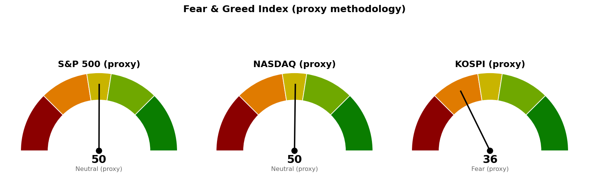

미국 지수·섹터·금리·유가·변동성지수는 9월 14일(월) 뉴욕 정규장 확정 종가입니다. 코스피와 니케이 225는 9월 15일(화) 한국시간 12시 시점의 장중 수치이며 종가가 아닙니다.
직전 브리핑은 9월 15일 새벽 00:35에 뉴욕 장중 수치로 썼고, 지금은 그 세션의 확정 종가와 진행 중인 코스피로 채점합니다.
| 직전에 건 조건 | 판정 | 근거 |
|---|---|---|
| S&P 500 종가로 7,668 회복 그리고 30년 금리 5.286% 아래 → 경고 해제 | 미충족 | 종가 7,620으로 조건선 48포인트 아래에서 마쳤습니다. 30년 금리도 5.329%로 조건선보다 0.043%포인트 높습니다 |
| S&P 500이 7,580 아래에서 정규장 마감 → 보유분 축소 검토 | 미충족 | 저가 7,592로 조건선 위에서 버텼고 종가는 7,620입니다 |
| S&P 500이 기준선을 못 지키면 내려갈 다음 지지 7,599 | 닿았으나 종가는 위 | 저가 7,592로 이 가격 아래를 건드렸다가 7,620으로 마쳤습니다 |
| 나스닥 사다리 1차 25,998 도달 | 충족(집행 조건은 미충족) | 9월 14일 저가 25,992로 닿았습니다. 집행 조건인 "9월 17일 이후 도달분"은 채우지 못했습니다 |
| 나스닥이 기준선을 못 지키면 내려갈 다음 지지 25,888 | 미도달 | 저가 25,993에서 멈춰 105포인트(하루 평균 변동폭의 0.34배) 위였습니다 |
| 코스피 사다리 1차 6,662 도달 | 충족(집행 조건은 미충족) | 9월 15일 장중 저가 6,625로 닿았습니다. 역시 9월 17일 이전이라 집행 대상이 아닙니다 |
| 코스피·나스닥 사다리 취소선(6,024 / 25,526) | 미충족 | 코스피는 679포인트(2.60배), 나스닥은 660포인트(2.15배) 위입니다 |
| 브렌트유가 107.63달러 위로 복귀 | 정정 — 미충족 | 아래 정정 항목 참조 |
직전 브리핑이 장중 수치로 적은 값들을 확정치로 정정합니다. S&P 500은 7,609(-0.63%)로 적었으나 7,620(-0.48%)로 마쳤고, 나스닥은 26,138(-0.74%)이 26,186(-0.56%)이었습니다. 변동성지수는 17.37(+9.66%)이 17.10(+7.95%), 10년 금리는 4.979%가 4.961%, 30년은 5.351%가 5.329%입니다. 방향은 모두 맞았고 폭이 작았습니다. 코스피 9월 14일 종가는 6,678로 적었으나 확정치는 6,684, 니케이 225는 63,634로 적었으나 63,493입니다.
브렌트유 판정은 틀렸습니다. 직전 브리핑은 108.34달러를 보고 "107.63달러 위로 복귀 → 충족"이라고 적었는데, 그 값은 장중이었고 확정 정산가는 107.18달러로 조건선보다 0.45달러 아래입니다. 충족이 아니라 미충족으로 바로잡습니다. 다만 유가가 100달러 위에서 버티며 장기금리와 같은 방향으로 움직이는 구도 자체는 그대로여서, 이 정정이 경고 단계 판단을 바꾸지는 않습니다.
직전 계획은 살아 있습니다. 해제 조건도 악화 조건도 종가로 충족되지 않았으므로 S&P 500 기준선 7,668과 축소 검토선 7,580, 코스피 기준선 6,815, 나스닥 기준선 26,271을 그대로 둡니다. 20일선은 코스피가 6,808에서 6,799로 내려왔고 나스닥은 26,264에서 26,269로, S&P 500은 7,661에서 7,662로 올라왔지만, 이 정도 이동으로 기준선을 다시 그리면 매일 다른 숫자가 나오므로 옮기지 않습니다. 사다리 회차와 취소선, 도착지 가격도 직전과 같은 숫자입니다.
| 줄 | 내용 |
|---|---|
| 현재 위치 | 6,703 (9/15 장중 12시, +0.28%, 고가 6,712 · 저가 6,625). 20일선(최근 20일 평균 가격선이되 최근 가격에 더 무게를 두는 지수이동평균) 6,799보다 96포인트(하루 평균 변동폭 261의 0.37배) 아래, 50일선 6,890보다 187포인트(0.72배) 아래. 상대강도지수(최근 14일 동안 오른 폭과 내린 폭의 비율을 0~100으로 나타낸 값) 47.4 |
| 기준선 | 6,815 (직전 그대로) — 일봉 종가로 위에서 마쳐야 인정합니다. 장중에 넘는 것은 판정이 아닙니다. 현재가에서 112포인트(0.43배) 위입니다 |
| 지키면 | 7,025. 5월 20일부터 9월 10일까지 6회 반응하며 지지에서 저항으로 역할이 바뀐 가격대이고, 7,000 단위 가격과 겹칩니다. 현재가에서 322포인트(1.24배) 위입니다 |
| 못 지키면 | 6,662. 3월 31일 저점에서 6월 19일 고점까지 상승분의 61.8%를 반납하는 자리(6,702)와 주봉 38.2% 되돌림, 6,600 단위 가격이 겹칩니다. 현재가에서 41포인트(0.16배) 아래이며, 오늘 저가 6,625로 이 구간 안에 들어갔다 올라온 상태입니다. 종가로 잃으면 다음은 6,409로 294포인트(1.13배) 더 아래입니다 |
| 매수 사다리 | 1차 6,662 계좌의 5%, 2차 6,409 계좌의 5%. 취소선 6,024(40일 박스 하단) — 일봉 종가로 잃으면 남은 회차를 집행하지 않습니다 |
| 예상 기간 | 기준선까지 0.43일치 변동폭, 도착지 7,025까지 1.24일치입니다. 되돌림 없이 한 방향으로 갈 때의 최단이 각각 1 거래일과 2 거래일이며, 그 이상은 근거를 댈 수 없어 상한을 적지 않습니다 |
2차 6,409는 2월 27일부터 9월 3일까지 5회 반응하며 저항에서 지지로 바뀐 가격대이고 9월 3일 저점 6,439가 그 위에 붙어 있습니다. 취소선까지 전부 물리면 1차는 -9.58%, 2차는 -6.01%가 되어 계좌 대비 -0.78% 손실입니다. 직전과 같은 숫자입니다.
40일 박스는 6,024~7,128이고 박스 안쪽은 매집 우위로 판정됩니다 — 지지 테스트마다 매도 거래량이 줄었고 저점이 절상됐습니다. 다만 직전 40일 구간(7,308~9,160)에서 아래로 내려와 이 박스에 들어온 상태라, 매물을 소화하고 올라가는 국면인지 한 번 더 내려가기 전의 쉬어 가는 국면인지는 아직 갈리지 않았습니다.
코스피 계획은 미국장 결과에 선행 종속됩니다. 코스피는 오늘 +0.28%로 올라 있지만 20일선 아래이고, 나스닥·S&P 500도 20일선 아래에 있어 세 기준선이 같은 방향을 가리킵니다. 오늘 밤 뉴욕 세션과 내일 FOMC 결과가 모레 코스피 시가를 좌우하므로, 코스피 단독 신호만으로 사다리를 앞당기지 마십시오.
| 줄 | 내용 |
|---|---|
| 현재 위치 | 26,186 (9/14 종가, -0.56%, 고가 26,330 · 저가 25,993). 20일선 26,269보다 82포인트(하루 평균 변동폭 307의 0.27배) 아래, 50일선 26,091보다 95포인트(0.31배) 위. 상대강도지수 49.0 |
| 기준선 | 26,271 (직전 그대로) — 20일선 26,269와 5월 11일부터 9월 14일까지 8회 반응한 가격대(26,289), 26,400 단위 가격이 겹치는 자리입니다. 일봉 종가로 위에서 마쳐야 유지로 봅니다. 현재가에서 85포인트(0.28배) 위입니다 |
| 지키면 | 26,680. 8월 5일 고점 26,739와 26,600 단위 가격이 겹치고 6거래일 전에도 반응했습니다. 현재가에서 494포인트(1.61배) 위이며, 그 위는 26,821과 90일 박스 상단 26,951입니다 |
| 못 지키면 | 25,888. 8월 24일 저점 25,911, 5월 7일부터 9월 14일까지 7회 반응한 가격대, 25,800 단위 가격이 겹칩니다. 현재가에서 298포인트(0.97배) 아래입니다 |
| 매수 사다리 | 1차 25,998 계좌의 5%, 2차 25,855 계좌의 5%. 취소선 25,526(7월 8일 저점) — 일봉 종가로 잃으면 남은 회차를 집행하지 않습니다 |
| 예상 기간 | 기준선까지 0.28일치, 도착지까지 1.61일치, 다음 지지까지 0.97일치 변동폭입니다. 기준선은 하루 안에 닿을 거리이고, 도착지와 다음 지지는 되돌림 없이 진행할 때의 최단이 2 거래일입니다 |
취소선까지 전부 물리면 1차는 -1.82%, 2차는 -1.27%가 되어 계좌 대비 -0.15% 손실입니다. 코스피 사다리보다 손실이 작은 것은 취소선이 회차 가격에 가깝기 때문이며, 그만큼 취소선에 닿기도 쉽습니다.
90일 박스는 24,807~26,951이고, 박스 안에서 저점이 낮아지고 있어 매집·분산 어느 쪽 우위도 판정되지 않았습니다. 사다리 1차 가격은 9월 14일 저가로 다시 닿았으나 9월 16일 FOMC 결과 확인 전에는 집행하지 않습니다.
| 줄 | 내용 |
|---|---|
| 현재 위치 | 7,620 (9/14 종가, -0.48%, 고가 7,648 · 저가 7,592). 20일선 7,662보다 42포인트(하루 평균 변동폭 62의 0.67배) 아래, 50일선 7,603보다 16포인트(0.26배) 위. 상대강도지수 46.8 |
| 기준선 | 7,668 (직전 그대로) — 정규장 종가로 위에서 마쳐야 하며, 장중에 넘는 것은 판정이 아닙니다. 현재가에서 48포인트(0.77배) 위입니다 |
| 지키면 | 7,801. 8월 5일 고점 7,794와 8월 13일 고점 7,817, 90일 박스 상단 7,794가 겹칩니다. 현재가에서 181포인트(2.90배) 위입니다 |
| 못 지키면 | 7,599. 50일선 7,603과 9월 1일 저점 7,611, 7월 15일 고점 7,582가 겹칩니다. 현재가에서 21포인트(0.34배) 아래이며, 그 아래 7,580이 보유분 축소 검토선이고 다음 겹침 구간은 7,565입니다 |
| 매수 사다리 | 이번 브리핑도 S&P 500에는 매수 사다리를 내지 않습니다. 아래 설명 참조 |
| 예상 기간 | 기준선까지 0.77일치, 도착지까지 2.90일치, 다음 지지까지 0.34일치 변동폭입니다. 다음 지지는 하루 안에, 도착지는 되돌림 없이 진행할 때 최단 3 거래일입니다 |
사다리를 내지 않는 이유는 직전과 같습니다. 아래쪽 첫 지지 겹침 구간 7,599와 보유분 축소 검토선 7,580 사이가 19포인트, 하루 평균 변동폭의 0.30배뿐이라 1차를 사는 가격과 보유분을 줄이라는 신호가 같은 구간에 들어갑니다. 그 아래 7,565(5월 28일~9월 10일 5회 반응, 7,550 단위 가격, 겹침 점수 4.5로 이 부근에서 가장 두껍습니다)까지 내려가야 다음 자리가 나오는데, 거기까지 가려면 7,580을 이미 종가로 잃은 뒤입니다. S&P 500 노출은 나스닥 사다리로 갈음하십시오.
세 지수 모두 9월 16일 FOMC 결과를 확인하기 전에는 어떤 회차도 집행하지 않습니다. 나스닥 1차는 9월 14일 저가로, 코스피 1차는 9월 15일 저가로 가격에는 닿았으나 두 건 다 FOMC 이전이므로 집행 대상이 아니며, 9월 17일 이후 다시 그 가격에 닿을 때부터 유효합니다. 두 사다리를 모두 채우고 취소선까지 전부 물리면 계좌 대비 합계 -0.93%입니다.
| 지수 | 종가/현재 | 등락 | 고가 | 저가 |
|---|---|---|---|---|
| S&P 500 (9/14 종가) | 7,620 | -0.48% | 7,648 | 7,592 |
| 나스닥 종합 (9/14 종가) | 26,186 | -0.56% | 26,330 | 25,993 |
| 코스피 (9/15 장중) | 6,703 | +0.28% | 6,712 | 6,625 |
| 니케이 225 (9/15 장중) | 64,082 | +0.93% | 64,101 | 63,067 |
미국 두 지수는 개장 직후 저가를 찍고 올라와 각각 종가를 저가보다 28포인트·194포인트 위에서 마쳤습니다. 나스닥 저가 25,993은 사다리 1차 25,998 바로 아래이고, S&P 500 저가 7,592는 다음 지지 7,599 아래·축소 검토선 7,580 위입니다.
코스피는 시가 6,659로 출발해 저가 6,625까지 밀린 뒤 6,703으로 올라온 상태입니다. 저가 6,625는 사다리 1차 6,662 아래 37포인트까지 내려간 값이며, 마감은 한국시간 15:30입니다. 니케이 225는 +0.93%로 아시아에서 가장 강합니다.
미국 섹터를 20일 초과수익(SPDR 업종 ETF의 지수 대비 초과 성과)으로 줄 세운 결과입니다. 하루치 등락률이 아니라 이 값이 주도섹터 판정 기준입니다.
| 주도 (20일 초과) | 20일 | 5일 | 1일 | 부진 (20일 초과) | 20일 | 1일 | |
|---|---|---|---|---|---|---|---|
| 에너지 (XLE) | +6.36% | +2.01% | -0.45% | 산업재 (XLI) | -6.76% | -0.93% | |
| 커뮤니케이션 (XLC) | +4.01% | +3.99% | +2.68% | 유틸리티 (XLU) | -3.49% | -0.86% | |
| 헬스케어 (XLV) | +2.36% | -0.88% | +1.93% | 부동산 (XLRE) | -2.62% | -0.21% |
에너지가 20일 초과수익 +6.36%로 1위 자리를 지켰지만 9월 14일 하루는 -0.94%로 지수보다 0.45%포인트 뒤졌습니다. 브렌트유가 장중 108달러대에서 107.18달러로 되밀린 것과 같은 방향입니다. 기술(XLK)은 20일 초과 -0.89%, 하루치 -1.81%로 지수 아래에 있어 이번 하락 구간에서 앞장서 밀리는 쪽입니다. 하루치로는 커뮤니케이션 +2.19%, 헬스케어 +1.45%, 필수소비재 +1.25%가 오르고 기술 -1.81%, 산업재 -1.42%, 유틸리티 -1.34%가 내려, 방어 성격 업종이 오르고 경기·성장 업종이 내리는 배열입니다.
한국 섹터는 테마형 ETF 기준이라 미국 업종 ETF와 성격이 다릅니다. 20일 초과수익 상위는 건설 +15.03%, 은행 +7.89%, 2차전지 +7.29%, 반도체 +2.71%이고, 하위는 자동차 -10.40%, 방산 -8.14%, 헬스케어 -6.31%입니다. 하루치로는 2차전지 +2.31%, 반도체 +1.55%가 앞서고 방산 -4.84%, 조선 -4.15%가 뒤집니다. 은행은 20일 기준 2위를 지키면서도 하루치로는 지수를 1.85%포인트 밑돌아, 직전 브리핑에서 하루 +5.71%포인트를 앞섰던 것과 반대쪽으로 움직였습니다.
| 항목 | 최근값 | 직전 | 등락 | 기준 시점 |
|---|---|---|---|---|
| 미 10년 국채 금리 | 4.961% | 4.975% | -0.28% | 9/14 종가 |
| 미 30년 국채 금리 | 5.329% | 5.354% | -0.47% | 9/14 종가 |
| 브렌트유 | 107.18달러 | 104.61달러 | +2.46% | 9/14 정산 |
| WTI | 102.97달러 | 100.05달러 | +2.92% | 9/14 정산 |
| 변동성지수 (VIX) | 17.10 | 15.84 | +7.95% | 9/14 종가 |
10년 금리는 장중 5%에 닿은 뒤 되밀려 4.961%로 마쳤습니다. 30년은 5.329%로 경고 해제 조건선 5.286%보다 0.043%포인트 높아, 직전 브리핑 때의 0.065%포인트에서 0.022%포인트 줄었습니다. 조건선까지의 거리가 좁아진 방향이지만 아직 넘지 않았습니다.
브렌트유와 WTI의 비교 기준은 직전 브리핑이 쓴 것과 같은 104.61달러·100.05달러이므로 두 세션분을 합친 등락입니다. 브렌트 107.18달러는 직전이 조건선으로 적은 107.63달러 아래이며, 위에서 정정한 대로 그 조건은 충족되지 않았습니다.
변동성지수는 15.84에서 17.10으로 올랐습니다. 직전 브리핑이 "금리가 오르는 가운데 나온 변동성 축소라 FOMC 결과에 되돌려질 여지가 있다"고 적은 부분이 되돌려진 방향으로 움직였습니다.
1. 금리 인상 확률 92% 초과, 12월 추가 인상 확률 75% 초과 (CNBC, 9월 14일) 선물 시장이 9월 16일 인상을 거의 확정으로 보고 있고, 12월 한 번 더에도 75% 넘는 확률을 매기고 있다는 내용입니다. 인상 자체는 이미 가격에 들어갔으므로 지수를 움직일 변수는 발표문과 점도표가 12월 이후를 어떻게 그리느냐입니다. 이것이 사다리 회차를 9월 17일 이후로 미뤄 둔 이유이고, 이번에도 그 조건을 느슨하게 하지 않습니다.
2. 10년 국채 금리가 5%에 닿은 뒤 되밀림 (CNBC, 9월 14일) 장중 여러 해 만의 고점인 5%를 찍고 4.961%로 마쳤습니다. 30년이 5.329%로 내려온 것과 같은 움직임이며, 경고 해제 조건인 5.286%까지 0.043%포인트를 남겼습니다. 금리가 이 방향으로 더 내려오고 S&P 500이 7,668을 종가로 회복하면 두 조건이 함께 채워질 수 있는 거리입니다.
3. 유가와 10년 금리의 동조가 2019년 이후 최강 (CNBC, 9월 15일) 두 값이 거의 같이 움직이고 있어, 유가가 100달러 위에 머무는 동안에는 장기금리가 내려오기 어렵다는 내용입니다. 에너지 섹터의 20일 초과수익 +6.36% 1위와 같은 사건이고, 30년 금리 5.286% 조건이 채워지려면 유가가 먼저 꺾여야 한다는 뜻이 됩니다.
뉴스 수집 과정에서 MarketWatch 두 개 피드는 응답이 없어 이번 선별에서 빠졌습니다.
| 지수 | 점수 | 구간 | 직전(9/15 새벽) |
|---|---|---|---|
| S&P 500 | 50.1 | 중립 | 48.5 |
| 나스닥 | 50.4 | 중립 | 48.8 |
| 코스피 | 35.5 | 공포 | 44.8 |

세 점수 모두 공식 CNN Fear & Greed 지수가 아니라 모멘텀·상대강도·변동성·안전자산 선호 네 항목으로 계산한 대용 지표입니다. 변동성 항목은 그 지수의 변동성이 자기 과거 3년 분포에서 차지하는 자리로 산출하며, 미국은 변동성지수 17.1이 백분위 58.2(표본 754일), 코스피는 내재변동성 지수가 없어 20일 실현변동성 연율화 43.4%가 백분위 83.1(표본 708일)입니다. 직전 브리핑과 같은 방식이므로 이번에는 직전 점수와 같은 잣대로 비교할 수 있습니다.
미국 두 지수의 네 항목은 모멘텀 62.5·61.8, 상대강도 46.8·49.0, 변동성 41.8, 안전자산 선호 46.1·46.6입니다. 모멘텀만 홀로 높고 나머지 셋은 중립 아래인 배열이 직전과 같습니다.
코스피는 44.8에서 35.5로 내려와 공포 구간에 들어왔습니다. 네 항목은 모멘텀 36.8(직전 47.5), 상대강도 47.4(52.2), 변동성 16.9(17.0), 안전자산 선호 43.0(63.4)이고, 하락분의 대부분은 안전자산 선호 20.4포인트와 모멘텀 10.7포인트에서 나왔습니다. 9월 14일 -3.36% 마감이 이 두 항목에 반영된 결과입니다.
| 날짜 (한국시간) | 이벤트 | 확인할 것 |
|---|---|---|
| 9월 15일 15:30 | 코스피 마감 | 6,662를 종가로 지키는지, 6,815를 회복하는지 |
| 9월 16일 05:00 | 뉴욕 정규장 마감 (미국 9/15) | S&P 500이 7,580 위에서 마치는지, 7,599와 50일선 7,603을 지키는지 |
| 9월 17일 03:00~03:30 | FOMC 금리 결정과 기자회견 (현지 9/16) | 인상 폭, 12월 이후 경로, 30년 금리가 5.286% 아래로 오는지 |
| 9월 17일 21:30 | 주간 신규 실업수당 청구 | 고용 둔화가 금리 부담을 상쇄하는지 |
| 9월 17일 이후 | 사다리 집행 조건 개시 | 코스피 6,662 · 나스닥 25,998에 다시 닿는지 |
장부에 기록된 보유는 15개 종목이고, 관심종목은 Bloom Energy (BE) 하나입니다(미보유, 이번 점검에서 조치 없음).
1. 신규 위험자산 편입 중단을 유지합니다. 경고 해제 조건 두 개 중 어느 것도 충족되지 않았고, FOMC 결과는 아직 나오지 않았습니다. 현재가 부근에서 지수든 종목이든 새로 담지 마십시오. 2. 매수 쪽 — 이번 브리핑에서 새로 살 자리는 없습니다. 코스피 1차 6,662와 나스닥 1차 25,998 모두 가격에는 닿았으나 FOMC 이전이라 집행 대상이 아닙니다. 9월 17일 이후 다시 닿을 때부터 각각 계좌의 5%로 유효하며, 취소선은 6,024와 25,526입니다. 모두 일봉 종가로 판정합니다. 3. GE Vernova (GEV)는 전량 손절이 확정됐습니다. 9월 14일 저가 868.25달러로 집행 손절 880.14달러에 닿았고, 종가 874.76달러로 관망 종료 기준 890.23달러와 경고 단계 이탈선 914.22달러도 함께 내줬습니다. 보유 1주·평단 1,009.58달러 기준 -13.4%(-134.82달러)입니다. 장부에는 아직 1주가 그대로 있으니, 매도하셨다면 봇에 수량·단가·날짜를 보내 주십시오. 4. USA Rare Earth (USAR)도 전량 정리 지시가 살아 있습니다. 9월 15일자 종목 리포트가 "직전 리포트의 집행 손절 15.33달러에 9월 14일 저가 15.25달러로 닿았다"며 30주 전량 정리를 지시했고, 신규 진입은 손익비 1:0.76으로 패스입니다. 장부에는 30주가 남아 있습니다. 이 종목도 매도 보고가 들어오지 않으면 다음 점검이 계속 30주 기준으로 판정합니다. 5. Fluence Energy (FLNC)는 오늘 미국장 종가가 판정선입니다. 9월 15일자 리포트가 "오늘 종가로 9.95달러를 되찾지 못하면 270주 전량 정리, 그 전이라도 종가가 9.16달러 아래면 그날 정리"로 바꿨습니다. 현재가 9.41달러에서 9.95달러까지는 하루 평균 변동폭의 0.69배입니다. 한국시간 9월 16일 05:00 마감으로 판정하십시오. 6. LightPath (LPTH)는 200주 유지, 판정선은 8.93달러입니다. 9월 15일자 리포트 기준이며 일봉 종가가 8.93달러 아래면 전량 정리입니다. 폐기선 9.38달러는 9월 11일·14일 이틀 연속 종가로 내준 상태이므로, 9월 16일 종가까지 회복하지 못하면 신규 매수는 그때부터 하지 않습니다. 7. Netflix (NFLX)는 보유 유지입니다. 9월 14일 종가 80.32달러로 회복선 78.19달러를 넘었습니다. 보유 10주·평단 88.95달러 기준 -9.7%(-86.33달러)이며, 추가 진입 여부는 종목 리포트에서 따로 판단합니다. 8. 한국 보유종목 셋은 기준 가격 앞에 있습니다. 삼성전자 (005930.KS)는 집행 손절까지 하루 평균 변동폭의 0.34배, LS ELECTRIC (010120.KS)은 경고 단계 이탈선까지 0.11배가 남았습니다. SK하이닉스 (000660.KS)는 오늘 1,726,000원으로 회복선 1,721,524원을 넘어 보유 2주를 유지하며 추가 진입 여부만 따로 판단합니다. 오늘 15:30 마감으로 판정하십시오. 9. 분석한 적 없는 7개는 이번에도 판정 불가입니다. 삼성물산 (028260.KS)·SOL AI반도체TOP2플러스 (0167A0.KS)·TIGER 코리아AI전력기기TOP3플러스 (0117V0.KS)·SOL 반도체전공정 (475300.KS)·TIGER 미국배당다우존스 (458730.KS)·Alibaba (BABA)·MP Materials (MP)에는 등록된 기준 가격이 없어 손절선도 목표도 없습니다. 리포트가 나오기 전까지 추가 매수도 정리도 하지 마십시오.
다음 세션에 볼 것 하나 — 한국시간 9월 17일 새벽 FOMC 결과 직후의 30년 국채 금리입니다. 5.286% 아래로 내려오고 S&P 500이 7,668 위에서 마치면 경고 단계를 해제하고, 금리가 오히려 올라가면 7,580이 다음 판정선이 됩니다.
이 문서는 참고 정보이며 투자자문이 아닙니다. 모든 수치는 위에 적은 기준 시각의 시장 자료에서 가져온 것이고, 투자 판단과 그 결과에 대한 책임은 투자자 본인에게 있습니다.